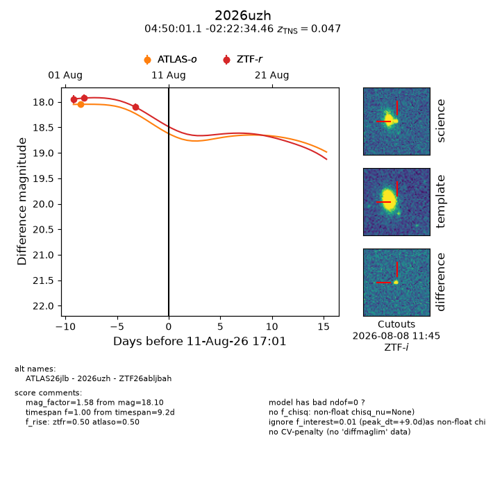
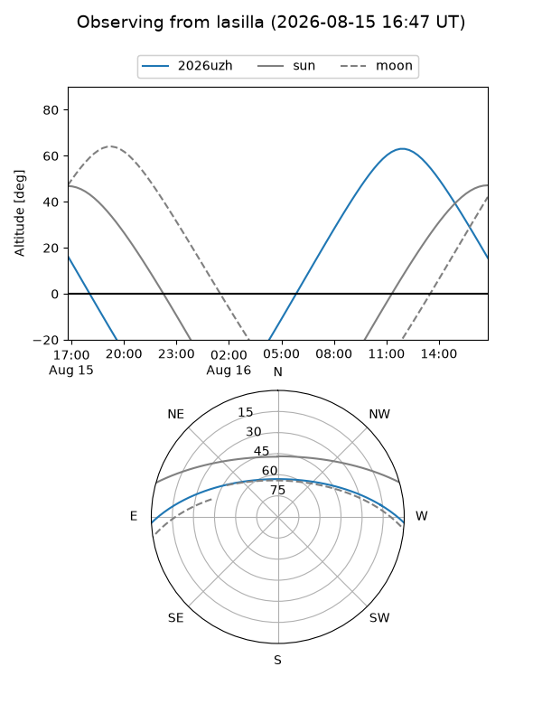
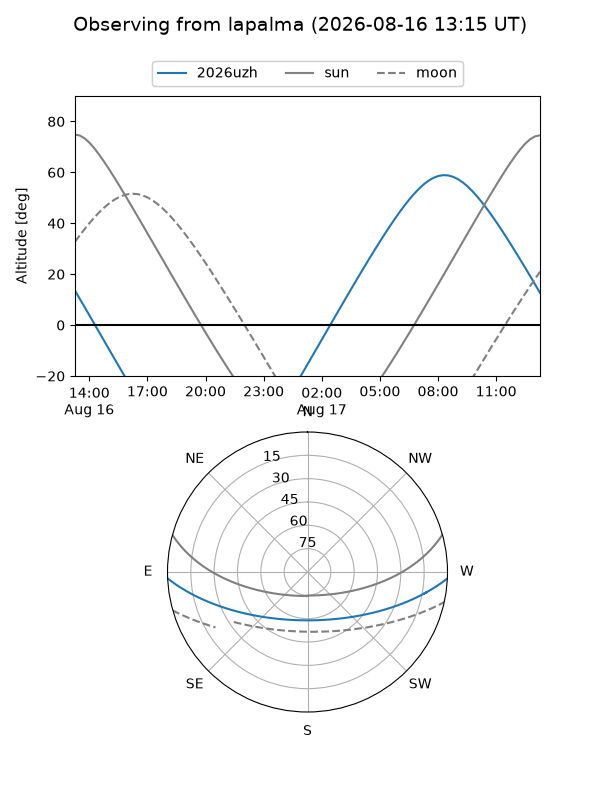
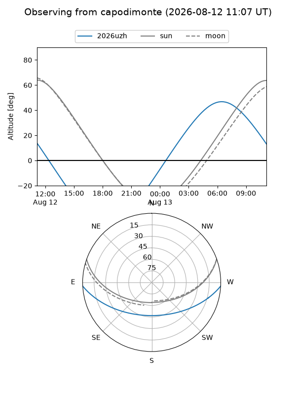
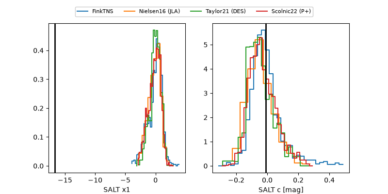

2026uzh
Target 2026uzh at 2026-08-11 17:05
Aliases and brokers:
FINK-ZTF: ztf.fink-portal.org/ZTF26abljbah
Lasair-ZTF: lasair-ztf.lsst.ac.uk/objects/ZTF26abljbah
ALeRCE-ZTF: alerce.online/object/ZTF26abljbah
YSE-PZ: ziggy.ucolick.org/yse/transient_detail/2026uzh
TNS name: wis-tns.org/object/2026uzh
Direct TNS query: direct search
alt names
ZTF26abljbah (ztf,fink_ztf)
2026uzh (tns,yse)
ATLAS26jlb (atlas)
Coordinates:
equatorial (ra, dec) = 72.5044,-2.37624
equatorial (HMS+DMS) = 04:50:01.06,-02:22:34.46
galactic (l, b) = (200.2927,-27.92277)
Flags:
TNS type: SN Ia
TNS redshift: 0.0470
peak dt: +9.0
Photometry:
last atlaso=18.05, ztfr=18.10
1 atlaso, 3 ztfr detections
Lightcurve

Visibility



Additional plots
